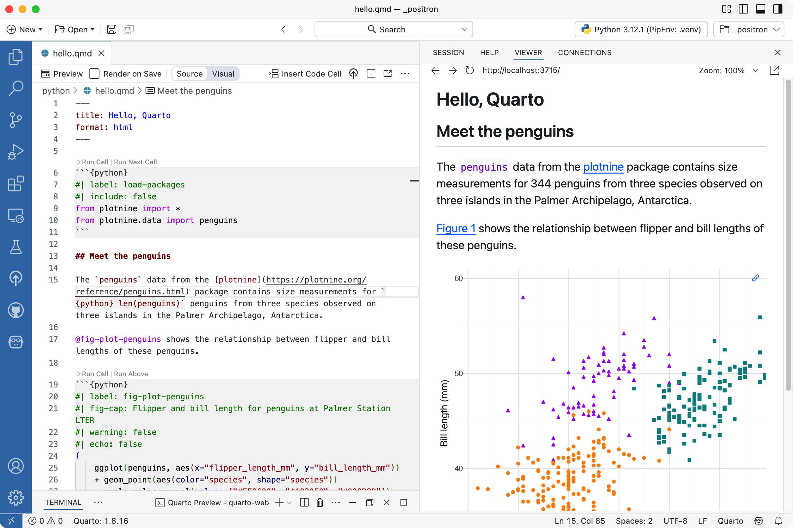

2 Your Quarto workflow
In this chapter, you’ll learn how Quarto documents are structured, how to render and preview them from the command line, how Positron and RStudio support interactive authoring, and how to choose the right tool for your workflow. We detail how to use Positron and RStudio with Quarto, as well as briefly introduce other tools you might use for Quarto authoring. We spend more time on Positron than on RStudio because RStudio’s Quarto support is mature and well documented elsewhere, whereas Positron is newer and its Quarto features are less widely covered.
2.1 Document structure
Quarto documents comprise three main components: a YAML header for metadata, markdown text for content, and code cells for executable code.
- YAML header: Metadata enclosed by
---markers, including the title, format, theme, and other document options. - Markdown text: Formatted text using standard Markdown syntax for headings, lists, links, emphasis, and more.
- Code cells: Executable code cells marked with
```{r}or```{python}that can include optional cell options to control execution and output.
We will focus on the first two components, the YAML header and markdown text, before diving into code cells and execution in Chapter 4.
document.qmd
---
title: "My first Quarto document"
author: "Jane Doe"
---
## Getting started
Quarto turns plain text into polished documents.
### Install Quarto
Download Quarto from the [official website](https://quarto.org).
### Create a file
Save your text in a file ending in `.qmd`.
## Sharing your work
Once you are **happy** with your document, render it to share.
### Choose a format
Pick `html`, `typst`, or `docx` as your output.
### Render the document
Click *Preview* or run `quarto preview document.qmd` in the Terminal.2.2 Quarto CLI
Before diving into specific IDEs, let’s start with the fundamentals: the Quarto Command Line Interface (CLI). The Quarto CLI is the core tool that powers all Quarto rendering. You can run Quarto CLI commands in any standard Terminal application as well as in the Terminal tab in RStudio or the Terminal panel in Positron.
The most fundamental Quarto command is quarto render, which converts your Quarto document into the desired output format. Quarto uses the term render to describe the process of taking this source document and producing a new file that combines the output from the executed code cells with the Markdown. You can render a specific Quarto document in the current directory in the Terminal with:
quarto render document.qmdBy default, Quarto will render your document in the format specified in the YAML header, falling back to HTML if none is specified. You can override the output format using the --to option:
quarto render document.qmd --to pdf
quarto render document.qmd --to docxWhile quarto render creates the output file and stops, quarto preview renders your document, opens it, and automatically re-renders it when you save changes to the source file:
quarto preview document.qmdThis command is particularly useful during active authoring, as it lets you see your changes immediately without having to manually rerun the render command. The preview server will continue running until you stop it (typically with Ctrl-CCtrl-C in the Terminal).
By default, quarto render and quarto preview operate on a single document at a time. If you have multiple Quarto documents you want to render at once, you can organize them as a Quarto project (a collection of related documents in a single directory, such as a website or book). When you run quarto render in a project directory, Quarto will operate on all documents in the project according to the project configuration and quarto preview will serve the whole project, refreshing whichever pages you edit. We will discuss projects in more detail in Chapter 13.
Beyond rendering and previewing, the Quarto CLI offers several other helpful commands.
To see which version of Quarto you have installed, run:
quarto --versionTo verify that your installation and its dependencies (such as Jupyter, knitr, and LaTeX) are correctly configured, as well as displaying other information that can be helpful for troubleshooting (see Chapter 16 for more on this), run:
quarto checkWhen your document is ready to share, quarto publish can render and push it to a variety of destinations:
quarto publish document.qmdThis command starts an interactive session that guides you through the process of publishing your document to the selected destination, including GitHub Pages, Posit Connect, and Posit Connect Cloud. See Chapter 6 for more details on publishing Quarto documents.
To get help, you can use the following command:
quarto --helpOr you can use --help with any command to see available options and usage information.
quarto render --helpThe same basic workflow applies whether you work from the Terminal or from an IDE. IDEs such as Positron, RStudio, and VS Code provide buttons, keyboard shortcuts, and preview panes for these tasks, but the underlying Quarto workflow is the same.
Now that we have introduced the basic document structure and foundational CLI commands, let’s explore how different IDEs integrate these capabilities into their interfaces to support your authoring experience.
2.3 Positron
Positron is a next-generation data science IDE that comes pre-configured for Quarto—the Quarto CLI is built in, and the Quarto VS Code extension is bundled. Additionally, Positron offers specialized features for Quarto authoring, such as integrated rendering and preview for Quarto documents, completion and diagnostics for Quarto options, and full R and Python support for code that is inside code cells in a Quarto document, including interactive execution of code in the Console, code completion, help, and diagnostics.
2.3.1 Installation
To get started with Quarto in Positron, download and install Positron from positron.posit.co. Since Quarto is built into Positron, no additional installation is required. Depending on your language of choice, you’ll also need to have R or Python installed on your system—R from cran.r-project.org or Python from python.org.
Positron’s Quarto support comes from the bundled Quarto extension, which is included as a bootstrapped extension—it behaves just as if you had installed it yourself, updates automatically as new versions appear in the extension gallery, and can be uninstalled if you ever need to.
Positron ships with its own copy of the Quarto CLI, but you aren’t locked into it. If you’d prefer to use a version of Quarto that you’ve installed yourself—say, to match the version your project uses elsewhere—that generally works automatically. When you need finer control over exactly which Quarto is used, set the ⚙️ Quarto: Path setting (quarto.path) to point at the installation you want. You can do this at the user or workspace level.
To see which version is currently active, check Positron’s bottom status bar. After changing your Quarto version, restart Positron so the status bar updates.
[MCR] Screenshot of the status bar showing the active Quarto version?
2.3.2 Creating documents
To create a new Quarto document in Positron, use the Quarto: New Quarto Document command from the Command Palette, the File > New File… menu, or the New button in the toolbar. This will open a new untitled .qmd file in the Editor, with a placeholder YAML header. Save the file with a .qmd extension to enable Quarto features such as preview and completion.
[MCR] Screenshot of the New File menu or picker with the Quarto Document option?
2.3.3 Core features
Positron provides several features that make Quarto authoring efficient and productive. Here’s an overview; the subsections that follow cover each in more depth:
Previewing: render
.qmdfiles and view the result side by side with your source, using the Quarto: Preview command, the keyboard shortcut (), or the Preview button in the toolbar.Dual editor modes: switch between source and visual editing (see Visual editor).
Polyglot language support: first-class support for R and Python makes Positron an excellent choice for Quarto projects with computational cells in either language or both languages.
Interactive code execution: run individual code cells in the Console without rendering the entire document (see Running code cells).
Code completion and diagnostics: as you type, Positron suggests valid Quarto and YAML options and flags syntax errors, helping you catch problems before you render.
Note that for executing code cells in Quarto documents in Positron, you’ll need to install some packages depending on your language of choice.
For R, you need the knitr package:
install.packages("knitr")For Python, you need the jupyter package:
pip install jupyter
[MCR] A screenshot of Quarto help that appears as you type?
2.3.4 Basic workflow
The typical workflow for authoring Quarto documents in Positron follows these steps:
- Create or open a
.qmdfile in the Editor. - Preview your document by executing the Quarto: Preview command to render and display the output.
- Iterate on your content by making edits and re-running the preview. You can optionally enable the Render on Save checkbox to automatically update the preview whenever you save your file.
- Execute code interactively by running individual code cells using the Run Cell button, which allows you to test your code without rendering the entire document.

2.3.5 Visual editor
The dual editor modes noted above give you access to Positron’s visual editor, a WYSIWYM (“what you see is what you mean”) interface for editing Quarto markdown without working directly in the source. Use the Edit in Visual Mode and Edit in Source Mode commands or the keyboard shortcut () to switch between modes. Beyond basic formatting, it supports many of Quarto’s richer constructs, including tables, citations, cross-references, footnotes, divs and spans, definition lists, attributes, and raw HTML or LaTeX. The visual editor’s support is still somewhat limited in Positron, though: it’s a great fit for rich-text authoring, but running code and other language features aren’t available in visual mode, so switch to source mode when you need them. We keep the coverage brief here and highlight visual-editor features throughout the book where they’re relevant.
[MCR] Screenshot of the Positron visual editor.
2.3.6 Editing notebooks
In addition to the source and visual editors for .qmd files, Positron includes a Notebook Editor for authoring Jupyter notebooks (.ipynb). You can render Jupyter notebooks with Quarto just like you can .qmd files. This is a natural fit if you already work in notebooks or prefer a cell-based interface.
Editing an .ipynb for Quarto differs from a .qmd file in a few ways:
YAML front matter goes in the first cell, which should be a Raw cell containing the title, author, and any other document options. Use the cell type menu at the bottom right of a cell to switch it to Raw.
Markdown cells accept any valid Quarto markdown, including features such as cross-references.
Code cell options use the same
#|comment prefix as.qmdfiles and must appear at the very start of the cell.
Rendering and preview work just as they do for .qmd files: run the Quarto: Preview command once, and the preview refreshes each time you save. One key difference is execution—.qmd files are always executed when rendered, but when rendering an .ipynb, Quarto does not run the cells by default, assuming you’ve already executed them while editing. To execute cells during rendering, pass the --execute flag:
quarto render notebook.ipynb --executeor enable it in the notebook’s YAML front matter:
execute:
enabled: trueYou can convert between .qmd and .ipynb representations at any time with quarto convert:
quarto convert notebook.ipynb
quarto convert notebook.qmd[MCR] Screenshot of the Notebook Editor with a Raw front-matter cell?
2.3.7 Running code cells
The interactive execution introduced above is supported by a full set of commands to run R and Python cells, with output appearing in the Console. You can run the current cell, the next or previous cell, all cells, the cells above or below the cursor, or just the selected line(s):
| Command | Shortcut |
|---|---|
| Run Current Cell | |
| Run Selected Line(s) | |
| Run Next Cell | |
| Run Previous Cell | |
| Run All Cells | |
| Run Cells Above | |
| Run Cells Below |
You can insert a new code cell with . Completion and execution for R and Python cells is built in to Positron. To add completion and execution for Julia, install the Julia extension.
2.3.8 Inline output
By default, running a code cell sends it to the Console, as described above. Positron can instead display cell output inline, directly beneath each cell in the Editor—much like a Jupyter notebook or RStudio’s R Notebooks. To use this feature, you must first turn on the ⚙️ Quarto > Inline Output: Enabled setting (quarto.inlineOutput.enabled) in your user or workspace settings.
Turning on inline output also changes the execution model. Rather than sharing a single Console across every document, Positron gives each .qmd file its own isolated R or Python session.
[MCR] Screenshot of a .qmd with inline output beneath a cell?
2.3.9 Contextual assistance
While you edit R and Python code cells, Positron offers the same assistance you’d get in a script or the Console: completion for functions and their arguments, help tooltips as you type or hover over a function, and full documentation in the Help pane when you press F1 with the cursor in a function.
For assistance with the prose and math around your code, run the Quarto: Show Assist Panel command to open a panel in the sidebar that updates based on where your cursor is. It shows a preview of LaTeX math as you edit an equation, and a thumbnail preview when your cursor is on a markdown image—handy for confirming you’ve referenced the right file.
[MCR] Screenshot of the Assist Panel showing an image thumbnail or equation?
2.3.10 Live preview
When you’re writing LaTeX math or a Mermaid or Graphviz diagram, you can open a live preview that re-renders automatically as you type. Click the Preview button above the code block, or use the shortcut. The preview appears in the Quarto assist panel alongside your document, so you can catch mistakes in an equation or diagram without rendering the whole file.
[MCR] Screenshot or GIF of a live diagram preview?
2.3.11 Previewing and rendering other formats
The Quarto: Preview command renders and previews your document’s default format. To preview a different format, use the Quarto: Preview Format command, which offers a list of formats to choose from—those declared in the document plus standard options like PDF and MS Word. After you preview a different format, the Quarto: Preview command and its keyboard shortcut rebind to that format for the duration of the preview; run the Quarto: Preview Format command again to switch back.
Embedded, side-by-side preview is available for HTML- and PDF-based formats, including revealjs and beamer slides. For Word and other formats, Positron renders the file, but you’ll open it in an external application to view the result.
Because preview renders only one format at a time, use the Quarto: Render Document command when a document declares multiple formats and you want to produce all of them. This command lets you render all declared formats at once, or selectively render any declared or standard format, such as PDF or MS Word.
[MCR] Screenshot of the Preview Format quick pick?
2.3.12 Render on Save
By default, Positron does not re-render your document every time you save—rendering can be slow if it involves long-running computations, and it’s useful to be able to save freely without triggering a full render. When you do want automatic rendering, you have three ways to enable Render on Save:
- Check the Render on Save checkbox in the Editor toolbar for the current document.
- Search for
quarto.renderin settings and enable the ⚙️ Quarto > Render: Render on Save setting (quarto.render.renderOnSave) to make it the default for all documents. - Set the
editoroption in your front matter (or project_quarto.yml), which overrides the Positron setting:
editor:
render-on-save: trueWith Render on Save enabled, the preview refreshes automatically each time you save.
2.3.13 External preview
By default, the rendered preview opens in a side-by-side panel inside Positron. If you’d rather preview in an external browser—or suppress the automatic preview entirely—change the ⚙️ Quarto > Render: Preview Type setting (quarto.render.previewType). Search for quarto preview type in user or workspace settings to find the setting, which offers three choices: internal (the default side-by-side panel), external (open in your default browser), and none (render without opening a preview).
[MCR] Screenshot of the Preview Type setting dropdown?
2.3.14 Additional Positron features
Positron provides several additional features and tools that enhance your Quarto workflow:
Get help from Posit Assistant, the AI assistant built into recent versions of Positron, which connects to your live R or Python session to help you author, explore, and debug. Its Quarto-specific skills include authoring
.qmddocuments—covering cross-references, callouts, citations, diagrams, and YAML options—generating reports from a conversation, and publishing your work to Posit Connect Cloud.Navigate long documents easily using the document outline panel in the primary sidebar.
[MCR] Screenshot of outline panel? Also, is it called panel?
- Insert common code patterns quickly with built-in code snippets using the Snippets: Insert Snippet command.
[MCR] Screenshot of adding columns to slides maybe?
- Version control your Quarto documents directly from the IDE with its Git integration, which also adds certain files to
.gitignorewhen you create a new Quarto project.
[MCR] Screenshot of .quarto in .gitignore?
- Open a Terminal already set to the correct working directory, for running Quarto CLI commands.
2.4 RStudio
RStudio is an IDE specifically designed for R, and it provides excellent support for Quarto authoring. RStudio comes with Quarto pre-installed and provides a rich set of features that make it easy to create, edit, and render Quarto documents, including syntax highlighting, code completion, integrated rendering and preview, and support for both visual and source editing modes.
2.4.1 Installation
To get started with Quarto in RStudio, download and install the latest version of RStudio from posit.co/download/rstudio-desktop. Also make sure that you have R installed on your system, which you can get from cran.r-project.org.
2.4.2 Creating documents
To create a new Quarto document in RStudio, use the File > New File > Quarto Document… menu. This opens the New Quarto Document dialog, where you can give the document a title and author and choose a default output format before RStudio creates a ready-to-edit .qmd file.
[MCR] Screenshot of the New Quarto Document dialog?
2.4.3 Core features
Like Positron, RStudio provides several features that make Quarto authoring efficient and productive. Here’s an overview; the subsections that follow cover each in more depth:
Rendering and preview: render
.qmdfiles to HTML, PDF, Word, or other formats with the Render button or the keyboard shortcut ().Dual editor modes: switch between source and visual editing.
Interactive code execution: run individual code cells without rendering the entire document.
Code completion and diagnostics: as you type, RStudio suggests valid Quarto and YAML options and flags errors before you render.
2.4.4 Basic workflow
The authoring loop in RStudio mirrors the one described for Positron above: create or open a .qmd file, click the Render button (or press ) to preview the output, then iterate as you edit. You can enable Render on Save so the preview refreshes automatically, and run individual code cells as you go rather than rendering the whole document each time.
RStudio’s Render button actually calls quarto preview.
2.4.5 Visual editor
RStudio pioneered the visual editor that Positron later inherited, so the experience described in Section 2.3 largely carries over: a WYSIWYM interface covering tables, citations, cross-references, footnotes, divs and spans, definition lists, attributes, and raw HTML or LaTeX. Switch between source and visual modes with the buttons in the Editor toolbar or the keyboard shortcut ().
[MCR] Screenshot of the RStudio visual editor.
2.4.6 Running code cells
As in Positron, you can execute code cells interactively rather than rendering the whole document. Each cell has a Run button in its top-right corner, and runs the current cell, with additional commands to run the next cell or all cells above or below.
[MCR] Confirm RStudio’s default cell-execution shortcuts against the current keyboard shortcut reference.
2.4.7 Inline output
RStudio pioneered inline output for R Markdown, and the same behavior is available for Quarto documents: cell output can appear directly beneath each cell in the Editor instead of in the Console (see Section 2.3 for the equivalent Positron feature). Toggle between inline and console output from the gear (settings) menu in the Editor toolbar, or set a default for all documents in RStudio’s global options.
[MCR] Confirm the exact menu path and labels for the inline-vs-console output toggle in RStudio.
2.4.8 Contextual assistance
While you edit cells, RStudio offers the same kinds of assistance as Positron: completion for functions and their arguments, function documentation via F1, and help in the Help pane.
2.4.9 Previewing and rendering other formats
RStudio’s Render button renders the format declared in your document’s YAML header. To produce a different format, change the format in the YAML header—or pick one from the dropdown next to the Render button—and render again.
[MCR] Confirm the Render button’s format dropdown behavior in the current RStudio release.
2.4.10 Render on Save
Like Positron, RStudio can re-render your document automatically each time you save. Enable the Render on Save checkbox in the Editor toolbar; RStudio then refreshes the preview whenever you save the file.
2.4.11 External preview
By default, RStudio shows the rendered preview in the Viewer pane, beside the Editor. You can change where previews appear—for example, opening them in a separate window—in RStudio’s global options.
[MCR] Confirm the preview-location options and their labels (Viewer pane, Window, etc.) in RStudio’s global options.
2.4.12 Projects
To create a project for a Quarto document or a set of related documents, use the File > New Project… menu, choose New Directory, and then select Quarto Project.
The New Project wizard can create plain document projects as well as websites and books. It also provides options to initialize a git repository and set up an renv environment, which help make your project reproducible from the start.
[MCR] Screenshot of the Create Quarto Project wizard?
2.4.13 YAML intelligence
RStudio provides code completion for the YAML you write in Quarto documents, covering project files, the document’s YAML front matter, and executable cell options. As you type, it suggests valid keys and values, which helps you discover options and avoid typos. If your YAML is invalid, RStudio also flags it when you save the document, underlining the problem so you can fix it before rendering.
[MCR] Screenshots of YAML completion and diagnostics?
2.4.14 Additional RStudio features
Like Positron, RStudio also offers an integrated terminal and Git integration.
The document outline looks a bit different in RStudio, where it is located in the Editor pane.
[MCR] Screenshot of outline panel in RStudio?
[MCR] Anything about code snippets in RStudio? I don’t use them so I’m not sure.
2.5 Other tools
While Positron and RStudio offer rich, integrated experiences for Quarto authoring, you can use Quarto with many other tools depending on your preferences and workflow.
2.5.1 VS Code
Visual Studio Code with the Quarto extension provides excellent support for authoring Quarto documents. The extension offers preview, syntax highlighting, code completion, and integrated terminal access. VS Code is particularly popular among Python developers and those who work across multiple programming languages.
To get started with VS Code, first install VS Code from code.visualstudio.com. Then install the Quarto CLI from quarto.org and the Quarto extension from the VS Code Marketplace.
Similar to Positron and RStudio, you can preview documents with the keyboard shortcut and run individual code cells with .
2.5.2 JupyterLab
If you’re already working with Jupyter notebooks (.ipynb files), you can use Quarto to render them to various output formats. JupyterLab provides an interactive environment for working with notebooks, and the Quarto CLI can render these notebooks just as it renders .qmd files.
You can also work with .qmd files directly in JupyterLab by installing the Quarto extension, which offers preview and rendering capabilities within the JupyterLab interface.
To learn more about using Quarto with JupyterLab, refer to the Quarto documentation at https://quarto.org/docs/tools/jupyter-lab.html.
2.5.3 Neovim and Vim
For developers who prefer terminal-based editors, both Neovim and Vim can be configured to work with Quarto documents. Community-developed plugins provide features like syntax highlighting, code execution, and preview integration.
To learn more about using Quarto with Neovim and Vim, refer to the Quarto documentation at https://quarto.org/docs/tools/neovim.html.
2.5.4 Other editors
Since Quarto documents are plain text files, you can author them in virtually any text editor:
- Emacs: With Markdown mode and language-specific modes (ESS for R, python-mode, etc.).
- Sublime Text: Using Markdown packages and build systems.
- Zed: With Markdown support and terminal integration.
- Any plain text editor: You can always author in your favorite editor and use
quarto renderfrom the command line.
2.6 Choosing a tool
The best tool for Quarto authoring depends on your specific needs and existing workflow:
If you primarily work with R, RStudio provides the most integrated experience with excellent support for R-specific features.
If you’re working with multiple languages, Jupyter notebooks, or prefer a modern IDE, Positron offers a rich set of features, with strong support for both R and Python.
If you already use VS Code for development, adding the Quarto extension gives you powerful Quarto capabilities in your familiar environment.
If your workflow is notebook-first, JupyterLab lets you keep authoring in
.ipynbfiles and render them with Quarto, with optional.qmdsupport via the Quarto extension.If you prefer keyboard-driven, terminal-based workflows, editors like Neovim or Vim can be configured to work effectively with Quarto.
Whichever editor you choose, the core Quarto workflow is the same: write plain-text source, preview as you develop, render to produce the final output, and use projects to make the work reproducible.
[MCR] Try all shortcuts with default settings before finalizing.